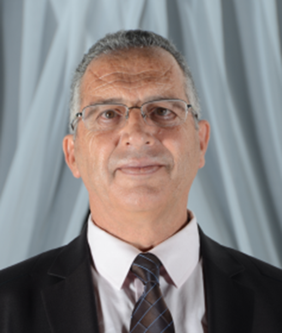

Ing.
Expert & Consultant — Phosphates, Phosphoric Acid & Fertilizers
40+ years of industrial expertise in phosphate chemical processing, phosphoric acid production, and research & development management.
Get in touch
Amine Fourati is a chemical process engineer and independent industrial consultant with over 40 years of experience in phosphate chemistry, phosphoric acid production processes, and fertilizer manufacturing.
After a career spanning four decades at SIAPE and the Groupe Chimique Tunisien (GCT) — rising from Production Engineer to Research Director — he founded FOURATI CONSULTING & RESEARCH in 2015 to offer independent expertise to phosphate and chemical process industries worldwide.
Available for independent consulting engagements with industrial operators, engineering firms, and research institutions active in phosphate chemistry and related industries.
Development and optimization of phosphoric acid production processes across multiple generations (dihydrate, hemihydrate). Commissioning, performance testing, and technical feasibility studies for new and revamped plants.
TSP, SSP, DAP, and super phosphoric acid process development. Product quality improvement, waste valorization, and environmental protection strategies in fertilizer manufacturing.
Direction of industrial research programs, research center management, university and institute partnerships, thesis supervision, and international scientific cooperation.
Process revamping, plant commissioning support, yield and performance optimization, and strategic consulting for phosphate-based chemical industries.
Since 2015
Founder & Consultant
FOURATI CONSULTING & RESEARCH
2012 – 2014
Research Central Manager
Groupe Chimique Tunisien (GCT)
2006 – 2012
Research Director — Sfax Center
Groupe Chimique Tunisien (GCT)
1994 – 2006
Senior Process Engineer — Sfax Research Center
Groupe Chimique Tunisien (GCT)
1986 – 1993
Process / Production Senior Engineer
SIAPE / Groupe Chimique Tunisien (GCT)
1981 – 1986
Phosphoric Acid Production Engineer
SIAPE
1975 – 1981
Engineer Degree — Chemical and Process Engineering
École Nationale des Ingénieurs de Gabès (ENIG), Tunisia
Available for consulting engagements, technical assessments, or advisory roles in phosphate chemistry and chemical process industries.